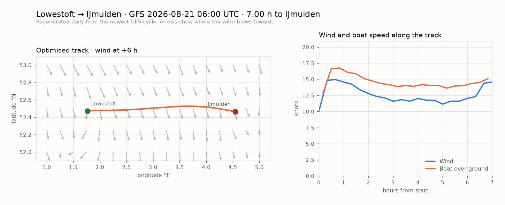

Record route — Lowestoft → IJmuiden
101.7 nm on 090 T, almost exactly due east: a single gybe-free reach with no tacks and no meaningful detours. The optimiser searches headings against the forecast wind and the tidal stream; the whole route family collapses to one real decision — how far north of the rhumb line to bulge, which costs distance but protects true wind angle if the wind backs.
Optimised track
Wind is sampled from the forecast GRIB at each position and time; boat speed comes from the polar table. The tidal stream is entered as a single vector — its direction is where the water flows toward. Arrows on the map point downwind, sized by wind speed.
Today's forecast run
Redrawn every morning by route/daily_forecast.py from the newest NOAA
GFS cycle: the optimised track over the forecast wind field, and the wind and boat
speed the optimiser expects along it. Yesterday's figure is replaced, not archived.

Brief
Written by the LLM layer from the scenario KPIs. It narrates the distribution — it does not choose the route and does not give go/no-go.
Loading brief…
Robustness — which route survives being wrong
Every scenario is optimised into its own route, then each route is re-sailed through
every other scenario, holding the geographic track fixed and re-integrating
the timing. P(record) is the weight-summed share of scenarios in which
that track still beats the record; the diagonal is excluded, so these are
out-of-sample numbers. Axes: wind pattern × forecast phase error (±1 h) × uniform
polar scale (±5%).
| Track optimised for | P(record) | Mean elapsed (h:mm) | Spread | Worst margin |
|---|---|---|---|---|
| Loading… | ||||